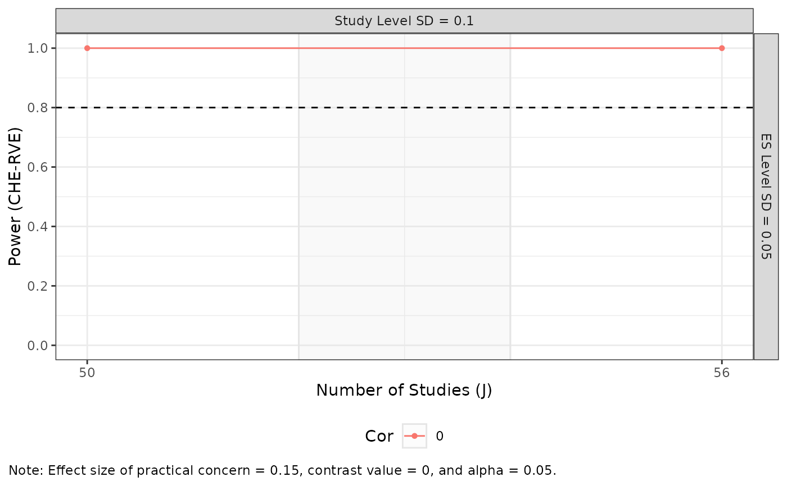

Create a faceted plot displaying the results of a set of power
analyses. This is a generic function to make facet_grid plots, with
specific methods defined for power_MADE,
mdes_MADE, and min_studies_MADE objects.
Usage
plot_MADE(
data,
v_lines,
legend_position,
color,
numbers,
number_size,
numbers_ynudge,
caption,
x_lab,
x_breaks,
x_limits,
y_breaks,
y_limits,
y_expand = NULL,
warning = TRUE,
traffic_light_assumptions = NULL,
traffic_light_palette = "green-yellow-red",
...
)Arguments
- data
Data/object for which the plot should be made.
- v_lines
Integer or vector to specify vertical line(s) in within each plot. Default is
NULL.- legend_position
Character string to specify position of legend. Default is
"bottom".- color
Logical indicating whether to use color in the plot(s). Default is
TRUE.- numbers
Logical indicating whether to number the plots. Default is
TRUE.- number_size
Integer value specifying the size of the (optional) plot numbers. Default is
2.5.- numbers_ynudge
Integer value for vertical nudge of the (optional) plot numbers.
- caption
Logical indicating whether to include a caption with detailed information regarding the analysis. Default is
TRUE.- x_lab
Title for the x-axis. If
NULL(the default), the x_lab is specified automatically.- x_breaks
Optional vector to specify breaks on the x-axis. Default is
NULL.- x_limits
Optional vector of length 2 to specify the limits of the x-axis. Default is
NULL, which allows limits to be determined automatically from the data.- y_breaks
Optional vector to specify breaks on the y-axis.
- y_limits
Optional vector of length 2 to specify the limits of the y-axis.
- y_expand
Optional vector to expand the limits of the y-axis. Default is
NULL.- warning
Logical indicating whether warnings should be returned when multiple models appear in the data. Default is
TRUE.- traffic_light_assumptions
Optional logical to specify coloring of strips of the facet grids to emphasize assumptions about the likelihood the given analytical scenario. See Vembye, Pustejovsky, & Pigott (forthcoming) for further details.
- traffic_light_palette
Character string or character vector to control the color of traffic light strips. If set to
'green-yellow-red'(the default), expected scenarios will be colored green, likely scenarios will be colored yellow, and unlikely scenarios will be colored red. If set to'greyscale', a gray-scale version of the traffic light plot is provided with white indicating the expected scenario, light gray indicating other plausible scenarios, and dark gray indicating less likely scenarios. Users can also specify their own palette by settingtraffic_light_paletteto a character vector with colors for the expected, likely, and unlikely scenarios. In this case, the vector must have three entries named'expected','likely', and'unlikely',- ...
Additional arguments available for some classes of objects.
References
Vembye, M. H., Pustejovsky, J. E., & Pigott, T. D. (In preparation). Conducting power analysis for meta-analysis of dependent effect sizes: Common guidelines and an introduction to the POMADE R package.
Examples
power_dat <-
power_MADE(
J = c(50, 56),
mu = 0.15,
tau = 0.1,
omega = 0.05,
rho = 0,
sigma2_dist = 4 / 200,
n_ES_dist = 6
)
#> Warning: Notice: It is generally recommended not to draw on balanced assumptions regarding the study precision (sigma2js) or the number of effect sizes per study (kjs). See Figures 2A and 2B in Vembye, Pustejovsky, and Pigott (2022).
power_example <-
plot_MADE(
data = power_dat,
power_min = 0.8,
expected_studies = c(52, 54),
warning = FALSE,
caption = TRUE,
color = TRUE,
model_comparison = FALSE,
numbers = FALSE
)
power_example
